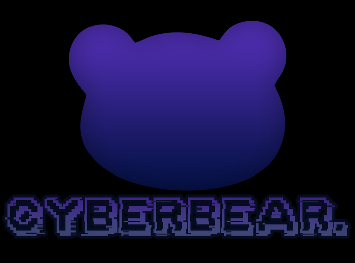
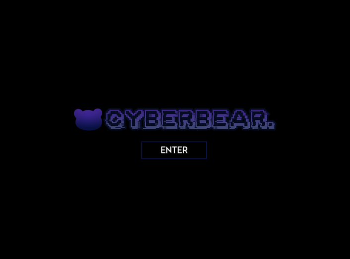
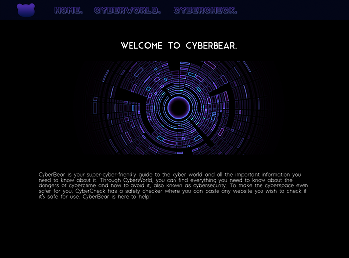
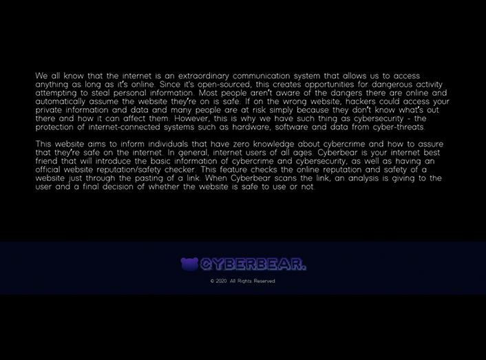
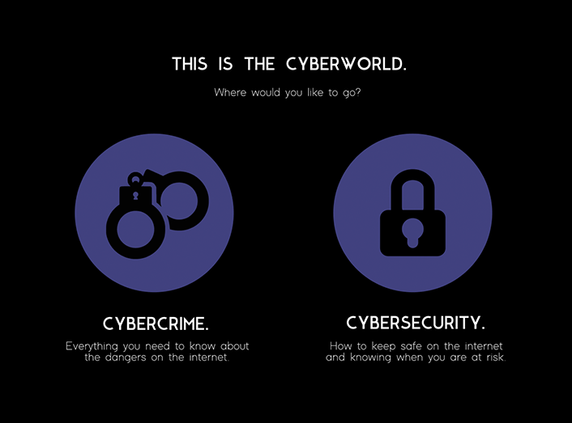
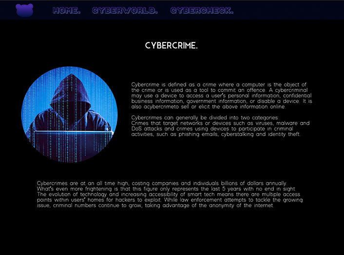
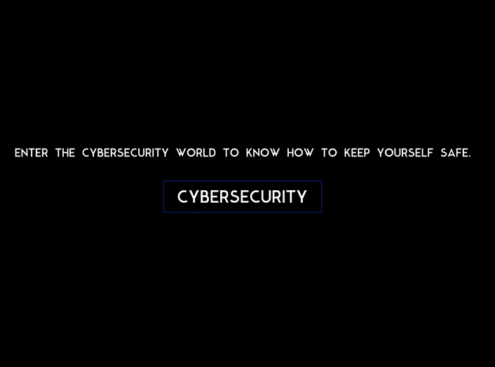
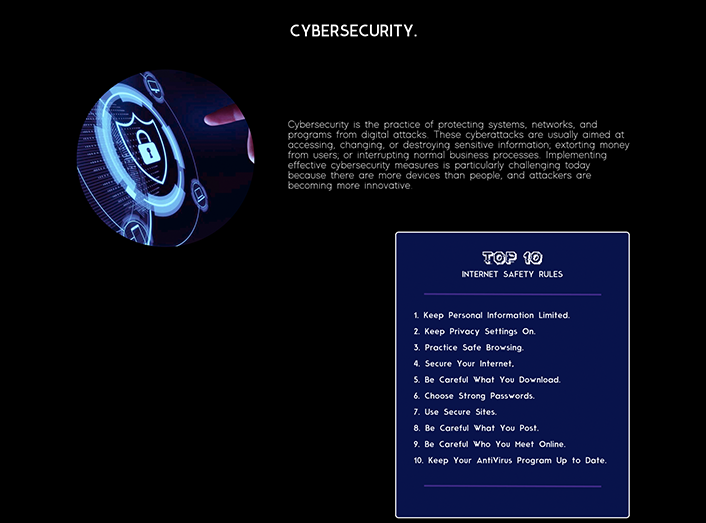
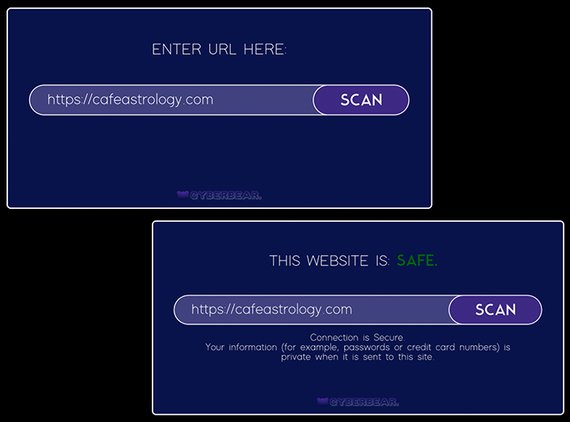
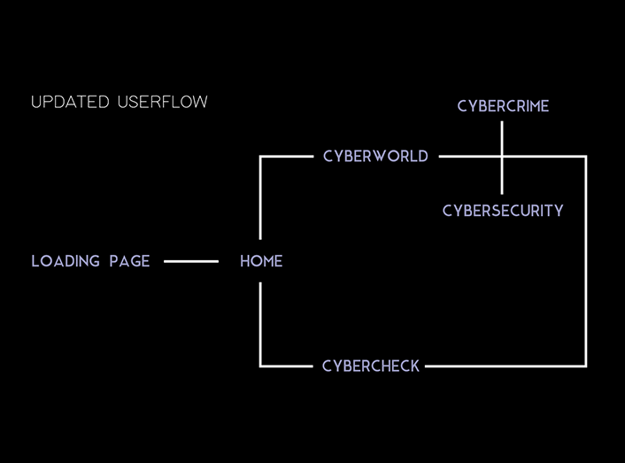

Following my concept from Project One, I’ve decided to go forth with the basis of my idea. This includes implementing everything discussed, which are mainly the introduction of basic information on cybercrime & cybersecurity and an additional website checker that checks if a website is safe or not from a pasted URL. I’ve also decided to keep the colour scheme, logos and typeface the same.
For prototyping, I’m probably going to use Figma as I’ve recently learnt how to use that this trimester and it would be useful to get used to the program. The software is great for prototyping and I think it would be easy to take advantage of the features.
I plan to follow through with my wireframes but refine them to be more functional and look more suitable for a website. This could involve changing sizes, playing around with buttons and exploring these areas for my prototype.
Another thing I’d like to consider is adding more information around “CyberWorld”, where I’d add a special top 10 tips or rules when it comes to internet safety. This will either be an additional page or at the bottom of the page so users can scroll to access it.
One thing I’d like to implement in my prototype is hover-state buttons. I think it would be great to use this for some interaction.
Also, another idea is to have a start-up page that features a button that enters the website. I’ll probably start with this for the prototyping process.
LOADING PAGE: Firstly, I went through the idea of having a start-up page that leads to the actual website from pressing a button. I put the CyberBear logo in the middle of the screen and experimented with different buttons. I aligned the button and the logo together to be centred in the middle of the page as I decided not to add anything else. Furthermore, following the initial layout, the background will be black on all pages, including this one.

HOME PAGE: The next thing I worked on was the navigation bar. Initially, I followed the style of the wireframe, but then I decided to make some design changes as I thought it was too big. For example, the logo in the wireframe included the name underneath, so I decided to just use the bear located at the top left. I’ve kept the design of the navigation buttons and the font the same as the wireframe and scaled this to match the size of the logo.
A design decision I made was to make the headers in all caps in the same position (centred) for every page. Following the typeface, this was done in Modern Sans (Regular). Following the header is a cyber image that I recoloured to match the website.
Image Credit: Reboot Digital

Following the image is a text about the website itself. I chose to change it to not be centred text as the headers were already centred, and I wanted some differentiation. Plus, I think that it would look better for the website as a whole.
Lastly, I decided to add a footer. This just has the secondary logo and the all rights reserved, the footer block colour matches the navigation bar.

CYBERWORLD: Following the wireframe, I matched the style and created icons to represent CyberCrime and CyberSecurity. These icons and the title will act as buttons that navigate to the desired page. The reason why I chose to have this way of navigation rather than a drop-down menu under CyberWorld was that I wanted to include more of interaction within the website for users.

CyberCrime has an image of a hacker on the left and has general information about cybercrime. The text is aligned to the right of the image, as well as the text below.
Image Credit: PreEmptive

Scrolling down the page, I decided to add a section that shows users that they can click to the next part of the website, which is CyberSecurity. This sort of interaction generally sets a certain type of user flow, but this depends on whichever subject the user chooses.
Image Credit: Upper Rhine
I chose to follow the button style as the loading page for consistency.
CyberSecurity follows the same style but has more information and at the bottom, has an additional “Top 10 Internet Safety Rules”. This is a card that I plan to follow the same style as the website checker. Below the card is another redirection option to CyberCheck.
For both images, I recoloured them to match the colours of the website.


CYBERCHECK: The scanner for the website is in a box with a bar that allows users to paste in a URL. After pasting, users can press the “scan” button and will then be analysed.
In this prototype, the website is scanned as safe and has information saying that the connection is secure.
For this prototype, I played around with buttons and inverted them when hovered over to highlight that it is clickable.

The final of my project resulted in different user flow and some changes to wireframes, however, the general concept remained the same.
Updated User Flow:

REFLECTION: I enjoyed working on this project as the prototyping stage is very interesting to me as I get to experiment either with different ideas or explore and improve original concepts. I am quite happy with what I was able to create on a software I was initially unfamiliar with too. It was a learning xperience and I enjoyed the process along the way.